SOFIA Science Data Archive: Spectra
Visualization of SOFIA spectra use capabilities of Tables, (image) Visualization, and Plots. Generic help on those capabilities can be
found in those other sections; this section focuses on spectra
specifically found in the SOFIA Science Data Archive.
Contents of page/chapter:
+Introduction
+Image Planes
+Data Tables
+Plots (Charts)
+Choosing among Table, Chart, or Image
+File Contents Menu
Some of the spectral files in the SOFIA Science Data Archive show the
spectrum as an image, some as a table, and some as a plot. In many
of the more processed data (e.g., levels 3 and 4), you can interact
with the spectrum as rendered in any of these ways. Some of the data
products are multi-plane files, and you can scroll through them
and/or pick the plane to visualize.
To visualize spectra, you must be on the search results page, with an instrument tab in the
foreground on the left (not the AOR tab) and have the "Data" tab in
the foreground on the right. (And, of course, your search must have
returned spectra.)
If the data are stored as a multi-plane FITS file, you may be able
to scroll through the planes, as in this EXES Level 2 raw product:
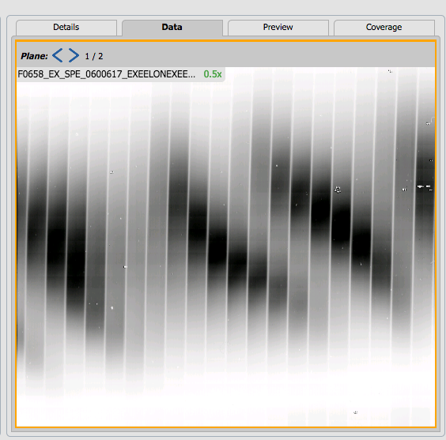
If the data are stored as a multi-plane FITS file, but where each
plane is a separate, extracted spectrum, it may look like this EXES
Level 3 "spec" product:
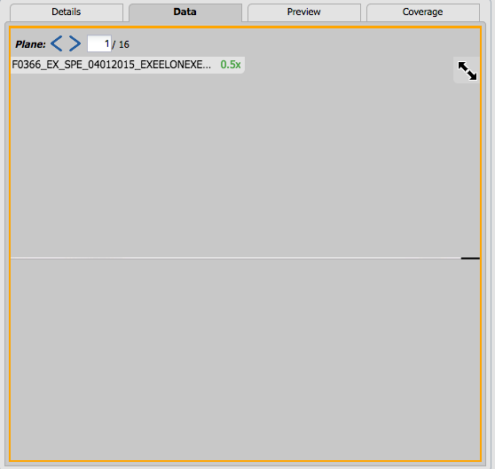
Click on the blue arrows in the top left of the image to scroll
through the planes.
Each of these images can be interacted with as described in the (image) Visualization section. However, zooming
has little/no meaning in particular for the extracted spectrum, and
zooming in/out has no effect on the image.
Some FITS files are tables, as in the case of this FIFI-LS
Level 1 product:
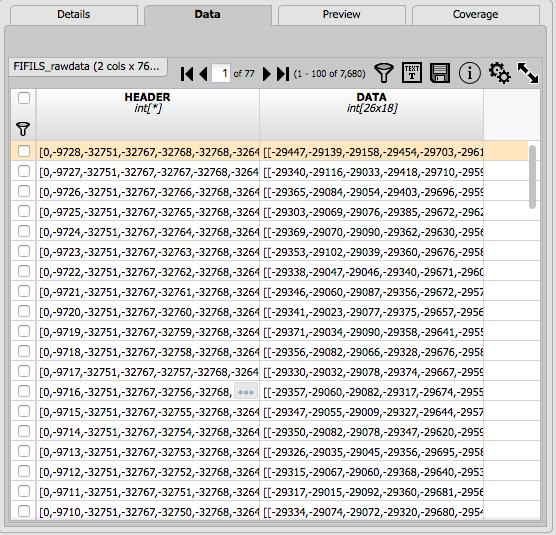
Each of these tables can be interacted with as described in the Tables section. Note that you can copy or view
the contents of a table cell.
Some FITS files can be rendered as plots (sometimes called charts), as
in the case of this EXES Level 3 mrgordspec product:
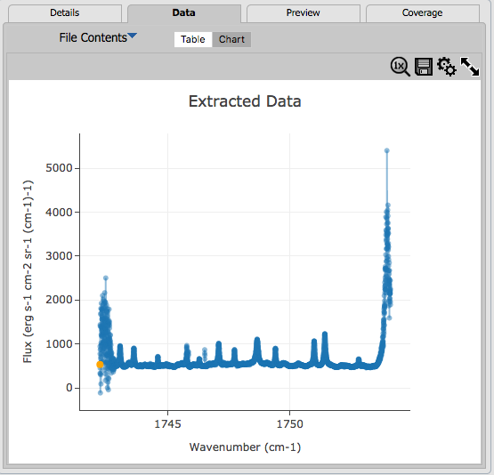
Each of these plots can be interacted with as described in the Plots section. The axes labels and units are
taken from the FITS file itself, and may be cryptic, but are meant to
give you some indication of the file contents before you download it
to work with on your own disk.
For some products, you can choose whether to view the data
product/data product plane as a table, chart, or image. The data come
up with a default choice, but you can pick a different option. In
this: , "Image" is selected; to
pick another option, just click on your choice.
Some products have a "File Contents" menu: 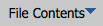 You can use this menu to select which
part of the data product to view.
When you click on this menu, you can have something short, as this for
GREAT Level 1 product:
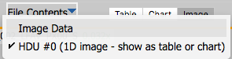
In this case, you can view the extracted spectrum as an image, or the
extracted spectrum as a table or chart, seen here as "HDU #0 (1D image
- show as table or chart)."
You can also have these options, as for
this EXES Level 3 product:
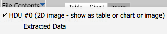
In this case, you can view the
original data, seen here as "HDU #0 (2D image - show as table or chart
or image)." Or, you can view the "Extracted Data." Note that this
option is indented on the menu. This is sort of a value-added view of
the data that the tool is presenting you, and this view should be the
default for data products with this option. The "Extracted Data" view
will combine information so as to, e.g., plot flux as a function of
wave number. If you go back to the "HDU #0..." view, and view that as
a table or plot, you will find data with columns like "naxis1_data_0,"
which is what is provided by the data file itself, but the "Extracted
Data" view interprets naxis1_data_0 properly as wavenumber. Here is an
example for this EXES Level 3 product; the first is the "Extracted
Data" table view and the second is the "HDU #0" table view.
 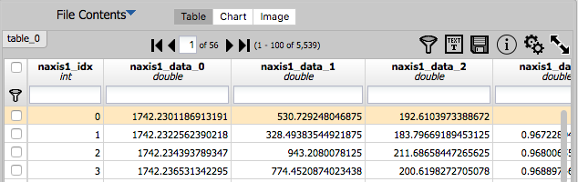
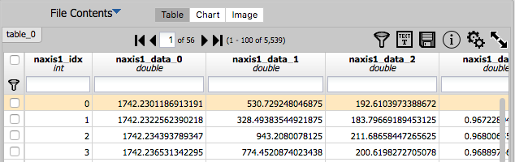
This example File Contents menu is from a HAWC+ Level 4 product, and
nearly all the image planes are true images.
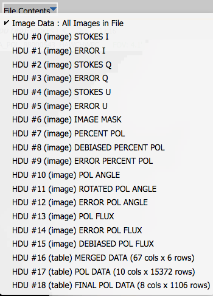
In this case, the selected option
is "All Images in File," and it becomes a view like the multi-plane
images described above, where you use the blue arrows to page through
the image planes. However, this menu can also be used to select the
image you would like to view, or view the last three planes (which are
tables). Note that each of the HDUs for the HAWC+ data are
multiple planes themselves, so if you pick "HDU #0", for this product,
you have 16 planes to page through, just in HDU #0.
An example File Contents menu from a FIFI-LS Level 3 product:
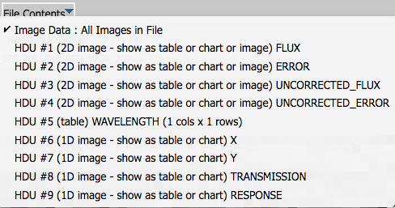
shows a mixture of 2D images and tables, including one that contains a
single table cell. This menu also has an "All Images in File," and you
can scroll through all the images. But the data products in this filie
are far more diverse than just images, and the File Contents menu is
the most efficient way of exploring these other data planes.